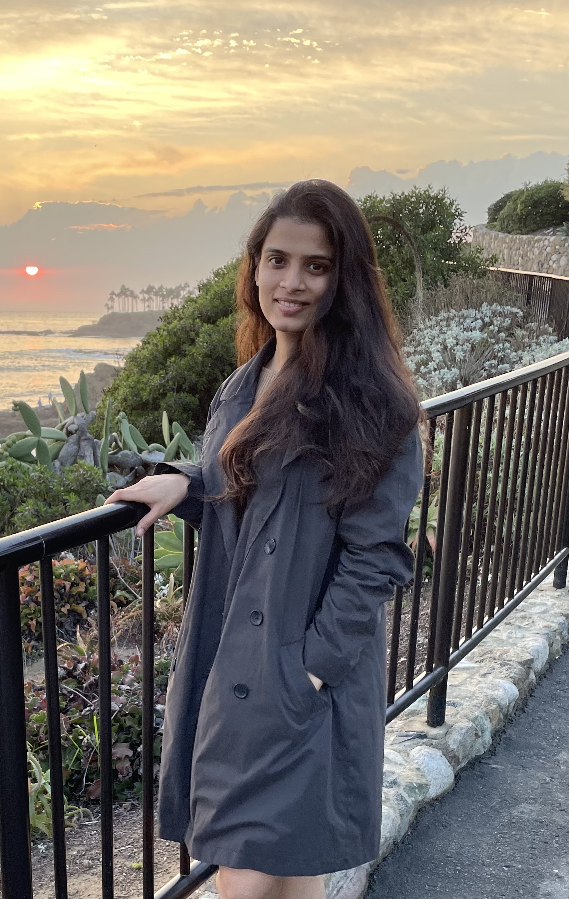

Mansi Saraf
Fortin Lab
Department of Neurobiology and Behavior
University of California, Irvine
Irvine, CA
email: msaraf (at) uci.edu
Introduction
I am a 4th year PhD student in the department of Neurobiology and Behavior at the University of California, Irvine. I am advised by Dr. Norbert Fortin. My research focuses on understanding temporal and sequence coding properties of the brain by analyzing neural data using advanced statistical tools and machine learning.